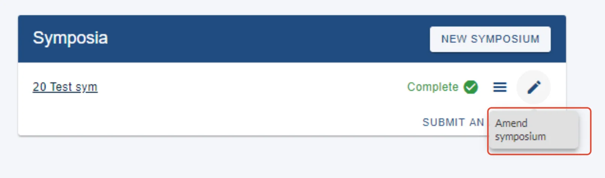
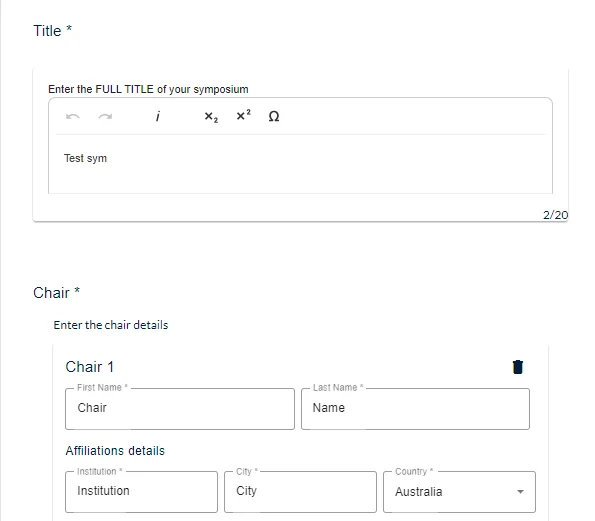
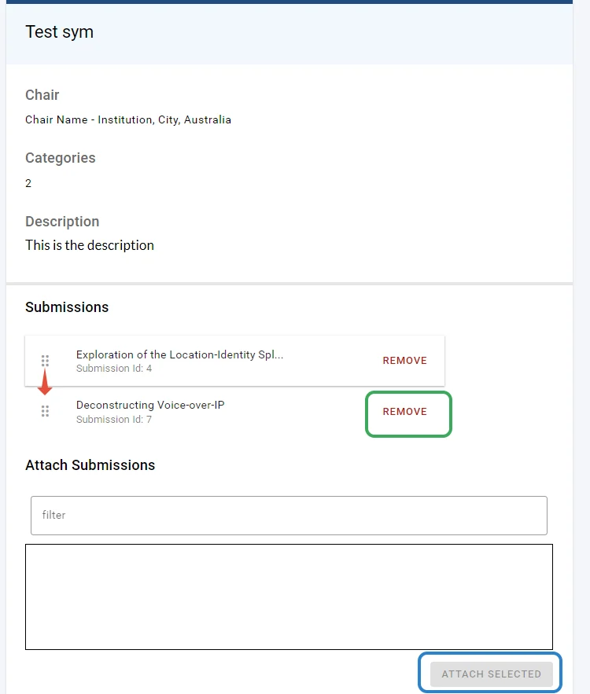
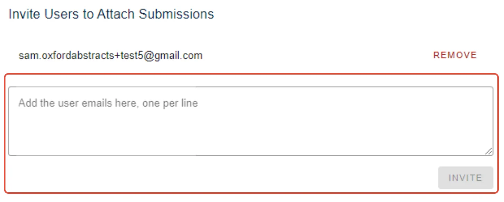
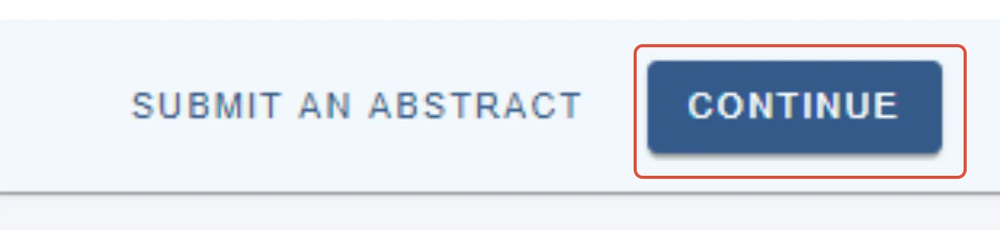

Editing a Symposium
For people making a submissionOrganising the event?
#
To edit a symposium you have already created, log into https://app.oxfordabstracts.com and click on the pencil icon, then Amend symposium on your dashboard. You can edit it, even if it is complete, subject to deadlines.

You can then amend any of the fields...

Make the changes required then click on Submit.
After pressing Submit,you then have to option to add, (blue) re-order (by dragging and dropping - red), or remove abstract submissions (green).

If the symposium submission settings allow for it, you can also invite users to attach submissions.

At the bottom of the page, there is the option to submit an abstract (this will be subject to settings and deadlines).
Click Continue to return to your personal dashboard.


Did this page solve it?
Thanks — this helps us fix it.